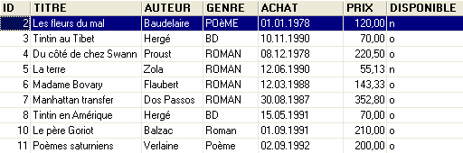
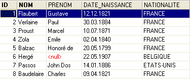
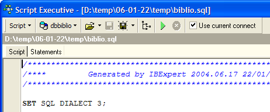
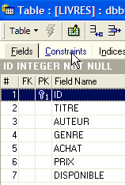

5. العلاقات بين الجداول
5.1. المفاتيح الخارجية
قاعدة البيانات العلائقية هي مجموعة من الجداول المرتبطة ببعضها البعض عبر علاقات. لنأخذ مثالاً مستوحى من الجدول [BIBLIO] السابق الذي كانت بنيته كما يلي:

وكان أحد أمثلة المحتوى كما يلي:

قد نرغب في الحصول على معلومات عن المؤلفين المختلفين لهذه الأعمال، على سبيل المثال nom و prénom، وتاريخ ميلادهم، و nationalité. لنقم بإنشاء جدول من هذا النوع. نضغط بزر الفأرة الأيمن على [DBBIBLIO / Tables] ثم نختار الخيار [New Table]:

لنقم الآن بإنشاء الجدول [AUTEURS] التالي:
 |  |
المفتاح الأساسي للجدول - يُستخدم لتعريف كل صف بشكل فريد | |
اسم المؤلف | |
الاسم الأول للمؤلف إن وُجد | |
تاريخ ميلاده | |
بلده الأصلي |
قد يكون محتوى الجدول [AUTEURS] كما يلي:

لنعد إلى الجدول [BIBLIO] ومحتواه:
في العمود [AUTEUR] من الجدول، لم يعد من الضروري إدراج اسم المؤلف. بل يُفضل بدلاً من ذلك إدراج الرقم (id) الخاص به في الجدول [AUTEURS]. لذا، لنقم بإنشاء جدول جديد باسم [LIVRES]. لإنشائها، سنستخدم البرنامج النصي [biblio.sql] الذي تم إنشاؤه في الفقرة 3.14. نقوم بتحميل هذا البرنامج النصي باستخدام الأداة [Script Executive, Ctrl-F12]:

نقوم بتعديل البرنامج النصي لإنشاء الجدول BIBLIO لتكييفه مع البرنامج النصي الخاص بالجدول LIVRES:
نكتفي بتوضيح التغييرات فقط:
- السطر 4: يصبح الحقل [AUTEUR] في الجدول رقمًا صحيحًا. يشير هذا الرقم إلى أحد مؤلفي الجدول [AUTEURS] الذي تم إنشاؤه مسبقًا.
- الأسطر 11-19: تم استبدال أسماء المؤلفين بأرقامهم.
- السطر 29: تم تغيير اسم القيد. كان يُسمى سابقًا [ UNQ1_BIBLIO ]. ويُسمى الآن [ UNQ1_LIVRES ]. يمكن أن يكون هذا الاسم أي اسم. لكن يُفضل أن يكون له معنى. هنا لم يتم بذل هذا الجهد. يجب تمييز القيود المفروضة على الحقول المختلفة والجداول المختلفة في قاعدة البيانات بأسماء مختلفة. تجدر الإشارة إلى أن القيد الوارد في السطر 29 يشترط أن يكون العنوان فريدًا في الجدول.
- السطر 36: تغيير اسم القيد على المفتاح الأساسي ID.
لنقم بتنفيذ هذا البرنامج النصي. إذا نجح، فسنحصل على الجدول الجديد [LIVRES] التالي:
 |  |
قد نتساءل عما إذا كنا قد استفدنا من هذا التغيير في النهاية. في الواقع، تعرض الجدولة [LIVRES] أرقام المؤلفين بدلاً من أسمائهم. ونظرًا لوجود آلاف المؤلفين، يبدو من الصعب الربط بين كتاب ما ومؤلفه. لحسن الحظ، فإن لغة SQL موجودة لمساعدتنا. فهي تتيح لنا الاستعلام عن عدة جداول في آن واحد. على سبيل المثال، نقدم الاستعلام SQL الذي يتيح لنا الحصول على عناوين الكتب الموجودة في المكتبة، مقترنة بمعلومات عن مؤلفيها. لنستخدم محرر SQL (F12) لإصدار الأمر SQL التالي:
SQL> select LIVRES.titre, AUTEURS.nom, AUTEURS.prenom,AUTEURS.date_naissance
FROM LIVRES inner join AUTEURS on LIVRES.AUTEUR=AUTEURS.ID
ORDER BY AUTEURS.nom asc
من المبكر جدًا شرح هذا الأمر SQL. سنعود إلى هذا الموضوع قريبًا. وكانت نتيجة هذا الاستعلام كما يلي:

تم ربط كل كتاب بشكل صحيح بمؤلفه وبالمعلومات المرتبطة به.
لنلخص ما قمنا به للتو:
- لدينا جدولان يجمعان معلومات ذات طبيعة مختلفة:
- تجمع الجدول AUTEURS معلومات عن المؤلفين
- الجدول LIVRES يجمع معلومات عن الكتب التي اشترتها المكتبة
- هذه الجداول مرتبطة ببعضها البعض. لا بد أن يكون لكل كتاب مؤلف. بل قد يكون له عدة مؤلفين. لم يتم أخذ هذه الحالة في الاعتبار هنا. تشير الخانة [AUTEUR] في الجدول [LIVRES] إلى سطر في الجدول [AUTEURS]. وهذا ما يُسمى بالعلاقة.
العلاقة التي تربط الجدول [LIVRES] بالجدول [AUTEURS] هي في الواقع شكل من أشكال القيود: يجب أن يحتوي كل صف في الجدول [LIVRES] دائمًا على رقم مؤلف موجود في الجدول [AUTEURS]. إذا احتوى أحد السجلات في الجدول [LIVRES] على رقم مؤلف غير موجود في الجدول [AUTEURS]، فسنكون في حالة غير طبيعية حيث لن نتمكن من تحديد مؤلف الكتاب.
يمكن لجدول SGBD التحقق من استمرار استيفاء هذا القيد. ولهذا الغرض، سنقوم بإضافة قيد إلى الجدول [LIVRES]:
 |  |  |
يُسمى الرابط الذي يربط السطر [AUTEUR] في الجدول [LIVRES] بالحقل [ID] في الجدول [AUTEURS] «رابط المفتاح الأجنبي». يُطلق على الحقل [AUTEUR] في الجدول [LIVRES] اسم «مفتاح خارجي» أو «foreign key» في المساعد أعلاه. تعريف المفتاح الأجنبي يعني أن قيمة العمود [c1] في الجدول [T1] يجب أن تكون موجودة في العمود [c2] في الجدول [T2]. يُطلق على العمود [c1] اسم «المفتاح الأجنبي» للجدول T1 بالنسبة للعمود [c2] في الجدول [T2]. غالبًا ما يكون العمود [c2] هو المفتاح الأساسي للجدول [T2]، ولكن هذا ليس إلزاميًا.
نقوم بتعريف المفتاح الأجنبي [AUTEUR] من الجدول [LIVRES] على الحقل [ID] من الجدول [AUTEURS] بالطريقة التالية:
 |
- اسم القيد: حر
- عمود «المفتاح الأجنبي»، وهو هنا العمود [AUTEUR] في الجدول [LIVRES]
- الجدول المشار إليه بواسطة المفتاح الأجنبي. هنا، يجب أن يكون للعمود [AUTEUR] في الجدول [LIVRES] قيمة في العمود [ID] في الجدول [AUTEURS]. وبالتالي، فإن الجدول [AUTEURS] هو الذي يتم الإشارة إليه.
- العمود المشار إليه بواسطة المفتاح الأجنبي. وهنا العمود [ID] في الجدول [AUTEURS].
نقوم بالتحقق من صحة هذا القيد:

إذا سارت الأمور على ما يرام، فسيتم قبولها:

ما هي نتيجة هذا القيد الجديد للمفتاح الأجنبي؟ باستخدام محرر SQL (F12)، دعونا نحاول إدراج صف في الجدول LIVRES برقم مؤلف غير موجود:

حاولت العملية [INSERT] المذكورة أعلاه إدراج كتاب برقم مؤلف (100) غير موجود. فشل تنفيذ الاستعلام. تشير رسالة الخطأ المرتبطة بذلك إلى حدوث انتهاك لقيود المفتاح الأجنبي "FK_LIVRES_AUTEURS". وهي القيد الذي قمنا بتعريفه للتو.
5.2. عمليات الربط بين جدولين
في قاعدة البيانات [DBBIBLIO] (أو أي قاعدة بيانات أخرى)، لنقم بإنشاء جدولين تجريبيين باسم TA و TB ونحددهما على النحو التالي:
الجدول TA
- ID: المفتاح الأساسي للجدول TA - DATA: أي بيانات |  |
الجدول TB
 - ID: المفتاح الأساسي للجدول TB - IDTA: المفتاح الأجنبي للجدول TB الذي يشير إلى العمود ID في الجدول TA. وبالتالي، يجب أن توجد قيمة من العمود IDTA في الجدول TA في العمود ID في الجدول TA - VALEUR: أي قيمة |  |
في المحرر SQL (F12)، سنصدر أوامر SQL تستغل في آن واحد الجدولين TA و TB.

يستخدم الأمر SQL، بعد الكلمة الرئيسية FROM، الجدولين TA و TB. ستؤدي العملية FROM TA، TB ستؤدي إلى إنشاء جدول مؤقت جديد يتم فيه ربط كل سطر من جدول TA بكل سطر من جدول TB. وبالتالي، إذا كانت الجدولة TA تحتوي على NA صفًا، والجدولة TB تحتوي على NB صفًا، فإن الجدول الناتج سيحتوي على NA × NB صفًا. وهذا ما توضحه لقطة الشاشة أعلاه. علاوة على ذلك، يحتوي كل صف على أعمدة الجدولين. الأعمدة coli المحددة بالترتيب [SELECT col1, col2, ... FROM ...] تشير إلى الأعمدة التي يجب الاحتفاظ بها. هنا تشير الكلمة الرئيسية * إلى أنه يتم طلب جميع أعمدة الجدول الناتج. يُقال أحيانًا إن الجدول الناتج عن الأمر السابق SQL هو حاصل الضرب الديكارتي للجدولين TA و TB.
فيما سبق، تم ربط كل صف من الجدول TA بكل صف من الجدول TB. بشكل عام، نرغب في ربط كل سطر من الجدول TA بالسطور ذات الصلة به في الجدول TB. وغالبًا ما تتخذ هذه العلاقة شكل قيد مفتاح أجنبي. وهذا هو الحال هنا. يمكن ربط صف من الجدول TA بالصفوف الموجودة في الجدول TB التي تستوفي العلاقة TB.IDTA=TA.ID. وهناك عدة طرق لطلب ذلك:
الأمر SQL السابق مشابه للأمر السابق مع وجود اختلافين:
- يتم تصفية الصفوف الناتجة عن الضرب الديكارتي TA × TB بواسطة جملة WHERE التي تربط صفًا من الجدول TA، الصفوف الوحيدة في الجدول TB التي تستوفي العلاقة TB.IDTA=TA.ID
- يتم طلب أعمدة معينة فقط باستخدام الصيغة [T.col] حيث T هو اسم الجدول و col هو اسم عمود في هذا الجدول. تسمح هذه الصيغة بإزالة الغموض الذي قد ينشأ في حالة وجود أعمدة تحمل نفس الاسم في جدولين مختلفين. وعندما لا يوجد هذا الغموض، يمكن استخدام صيغة [col] دون تحديد الجدول الذي ينتمي إليه هذا العمود.
والنتيجة التي يتم الحصول عليها هي كما يلي:

ويمكن الحصول على النتيجة نفسها باستخدام الأمر التالي: SQL:
يُشتق مصطلح «الربط الداخلي» من العبارة [inner join]، وهو الاسم الذي يُطلق على هذا النوع من العمليات بين جدولين. وسنرى لاحقًا أن هناك ما يُسمى «الربط الخارجي». في الربط الداخلي، لا يؤثر ترتيب الجداول في الاستعلام على النتيجة: FROM TA inner join TB يعادل FROM TB inner join TA.
الأمر السابق SQL لا يضع في الجدول الناتج سوى الصفوف من الجدول TA التي تشير إليها صف واحد على الأقل من الجدول TB. وبالتالي، فإن السطر TA في الجدول [3, data3] لا يظهر في النتيجة لأنه غير مشار إليه بواسطة أي سطر في الجدول TB. قد نرغب في الحصول على جميع السطور من الجدول TA، سواء تمت الإشارة إليها من قبل سطر في الجدول TB أم لا. في هذه الحالة، نستخدم ربطًا خارجيًا بين الجدولين:

لدينا هنا عملية ربط خارجي يساري "left outer join". لفهم المصطلح "FROM TA left outer join TB"، علينا أن نتخيل عملية ربط تضع الجدول TA على اليسار والجدول TB على اليمين. تظهر جميع الصفوف الموجودة في الجدول الأيسر في نتيجة عملية الربط الخارجي الأيسر، حتى تلك التي لم يتم التحقق من علاقة الربط الخاصة بها. ولا تشكل علاقة الربط هذه بالضرورة قيدًا للمفتاح الأجنبي، على الرغم من أن هذا هو الحال الأكثر شيوعًا.
بالترتيب التالي:
تكون الجدولة TB هي «اليسار» في عملية الربط الخارجي. وبالتالي، ستظهر جميع السطور من TB في النتيجة:

وعلى عكس الانضمام الداخلي، فإن ترتيب الجداول له أهمية هنا. كما توجد أيضًا عمليات انضمام خارجي يمين:
- FROM TA left outer join TB تعادل FROM TB right outer join TA: الجدول TA يقع على اليسار
- FROM TB الارتباط الخارجي الأيسر مع TA يعادل FROM TA الارتباط الخارجي الأيمن مع TB: الجدول TB يقع على اليسار
وبما أننا أصبحنا الآن على دراية بأساسيات الاستخدام المتزامن لعدة جداول، يمكننا الآن تناول عمليات الاستعلام الأكثر تعقيدًا في قواعد البيانات.